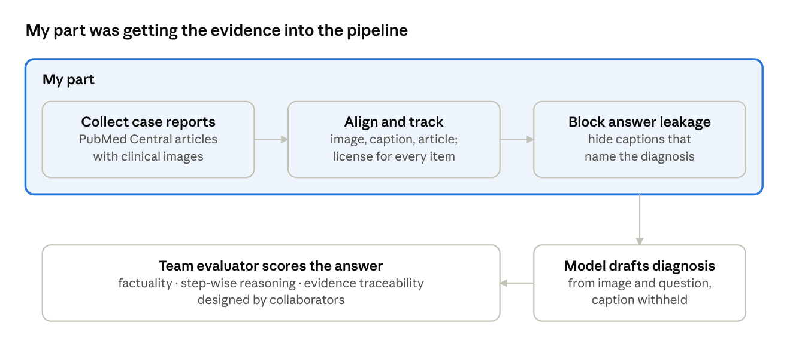
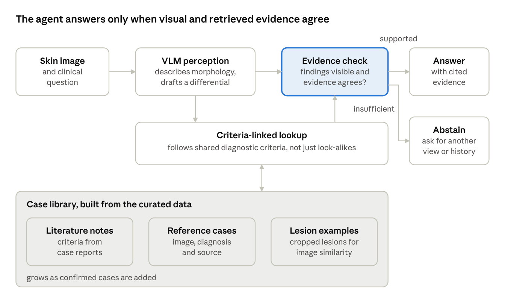

Project · Medical multimodal AI
Evidence-Grounded Dermatology VLM Agent
When a vision-language model diagnoses a skin condition, is it actually using the image, and can it tell when the image does not support an answer?
In a CMU–Yale project that evaluates LLM/VLM dermatology diagnosis: clinical images from PubMed Central case reports, aligned with captions and source articles, licenses tracked per item.
The evaluator that scores each answer on factual accuracy, step-wise reasoning, and evidence traceability was designed by collaborators.
Test whether models notice when the lesion is hidden, and whether checking evidence before answering reduces confident wrong answers.
Why it matters
Building the data showed how easily a model can answer without looking. Many case-report captions name the diagnosis outright, so a model that reads the caption can score well while ignoring the image. I hid those captions. The same shortcut appears in other forms: the question can give the answer away, or the model can fall back on what is common rather than on what is shown.
Evaluations of medical VLMs on radiology images point the same way: when the diagnostic region is removed, many models keep answering instead of saying the evidence is missing. Dermatology adds two complications. Color and lesion boundaries are themselves diagnostic, and lesions look different across skin tones.
Completed work and my role
The project evaluates how well LLMs and VLMs diagnose skin conditions. My part was the data the evaluator runs on.

- collected dermatology case reports from PubMed Central, keeping each clinical image together with its caption and the article it came from;
- aligned images, captions, and articles, and recorded the license of every item, so only reusable material enters the evaluation set;
- hid captions that name the diagnosis, so a model cannot pass by reading the answer from the text;
- integrated the result into the team's evaluation pipeline.
Next step: an evidence-checking agent
The agent below is what I would build on top of this data. It is a design, not a result.

- Case library. Keep the curated reference cases, their cropped lesions, and short notes from the case reports in one place, linked by diagnosis and by the diagnostic criteria each report mentions.
- Criteria-linked lookup. Retrieve reference cases that share a diagnostic criterion with what the model describes, not only the images that look most similar.
- Evidence check. Before answering, check that the findings the answer relies on are visible in the lesion and that the retrieved cases agree. Otherwise, say what is missing.
- Cited answers. Each diagnosis carries the reference cases it used, which is what the team's evaluator already scores for traceability.
This is deliberately simple. My expectation is that the evidence check matters more than the library, and the first experiment is designed to find out.
Questions
- Do dermatology VLMs keep answering when the lesion is hidden?
- Does a simple evidence check reduce those confident answers without hurting accuracy on normal images?
- Are the failures, and the benefit of the check, the same across skin tones?
How to test it
For each image, make versions with the lesion masked, only the lesion kept, and a crop that misses the lesion. Add a false-premise version of each question. Each probe has a correct behavior, such as abstaining when the lesion is hidden.
Accuracy on original images, so caution is not bought with lost capability. How often the model answers confidently after the evidence is removed. The accuracy gap between lesion-only and lesion-masked images. All split by skin type.
The same models alone, with retrieval over the curated data, and with the evidence check added, so the effect of each step is visible. Public dermoscopy data with lesion masks and skin-type labels complement the curated set.
Limitations and scope
- Research, not clinical use. All data are public, de-identified research sets. Nothing here is a diagnostic tool or has been validated with clinicians.
- Probes are proxies. A greyed-out lesion is a clean test of evidence use, but real failures come from blur, poor lighting, and partial views.
- Abstention has a cost. A system that abstains on everything has a perfect silent-failure rate, so accuracy on intact images and coverage are always reported next to it.
- Skin-tone coverage is thin. Darker skin types are under-represented, so group differences may be noisy and will be reported with confidence intervals.
- Corpus licensing. Crawled images and text are used only under their sources' terms. Only derived references, not raw material, would be released.